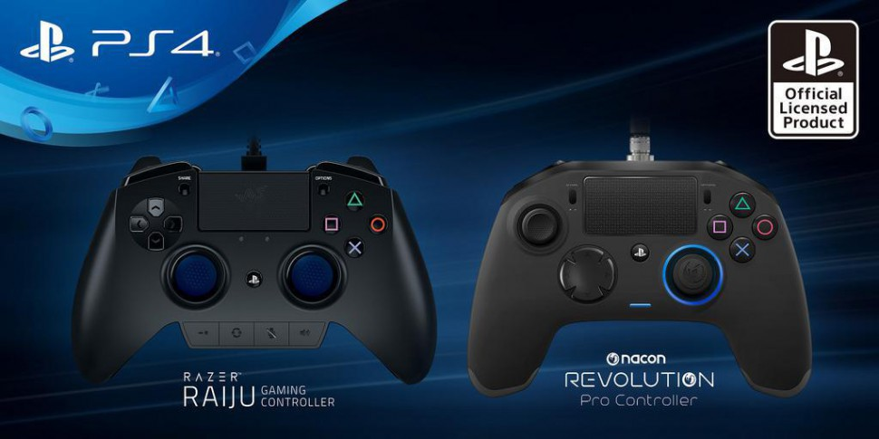
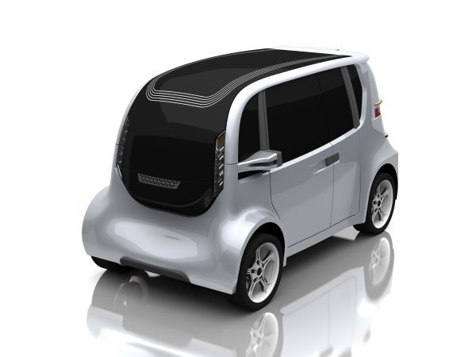
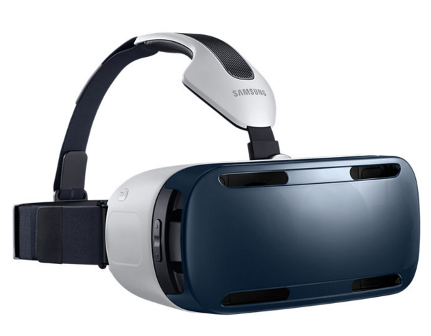
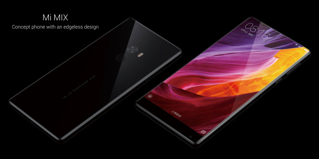

Sony toont Pro-controllers van Razer en Nacon
Intel bevestigt Kaby Lake-lijn van desktop processors

Slimme ICT infrastructuur voor een betere toekomst

Virtual Reality-adoptie komt langzaam op gang in Nederland

Xiaomi kondigt 'randloze' smartphone Mi Mix aan